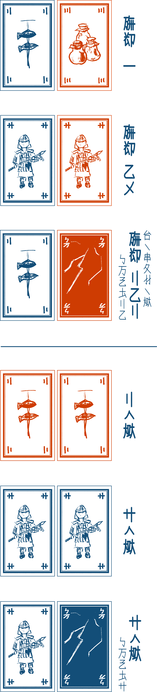
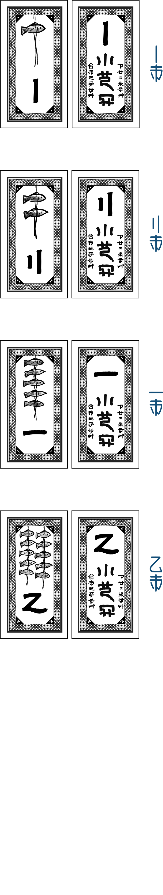
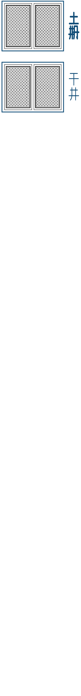
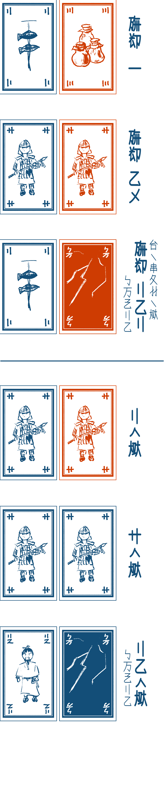
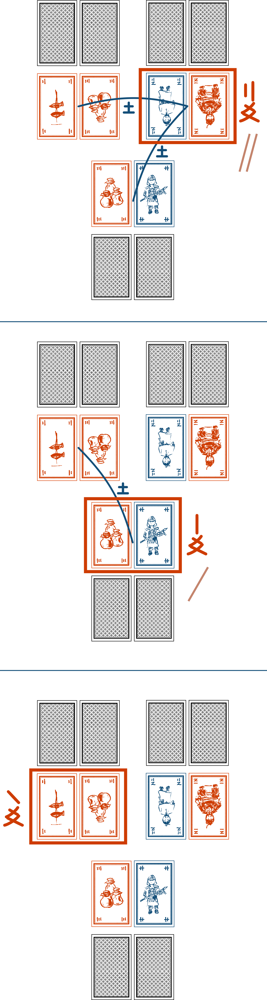

人如大遠小周之賢人助王。使手片為生大遠加小周之二集。大遠加大遠。小周加小周互戦。遊術終之時全豊之人上行。


一亦多人在手下銭之時遊術須終。
混々全片為生積片。全人手五片而此手片。
使手片為生二集。於一集二片在。硬集大遠。軟集小周。同硬此善。残片於下季力使。全人手二集而於机須閉付。

集之硬軟如此。集「友」加「汪磨」在。友同色同値之二片。友於全汪磨硬力。此故於友心之糸連在。友加友之硬軟目積値之大小定。汪磨此無友之集。汪磨之硬軟目積値之大小定。
神声此同色歪片。使神声之時無目遊人之心而目此集之力端。

全人開大遠而目其硬軟定「大遠之値」
或集之値生於其集軟亦同硬之集之多少。如絵。

使値軸付此。全人開小周而如同付値。或人手之銭此大遠加小周之層値。
全使片行斥片。全人手加四片。妙時手片六片亦多。其時其人行心道須裁為手片此五片。
再々為行裁集裁銭裁片之季。在手上言之積銭之人在即遊終。
裁銭之時手来無銭之人須手一手巻。此故賢人目古時圧眉学行。心使之時人斥手巻。斥毎一巻手毎一片。斥多手巻即手多片。
大遠小周全友即卵手来。此故善王須心友極錘。別人在手卵之時手此。裁集之下汝斥卵之時識別人之心。此時言大遠亦小周即別人之全大遠亦小周須開。此下汝生之全集反来於手片而再裁集。大遠小周全友之人多即小周硬之人須手卵。小周同硬即卵無行。
集来全斥片混々再為積片。
遊術極長而与手片亦与手巻之道無在之時遊術此時終行。此時目手銭豊貧而全豊之人須上行。此故人無行来即賢人心圧。加而圧眉層積即賢人心圧。此国壊之道。豊人須人善。

此遊術「光龍卵」此衣足々木遊術之為生遊術。我等之認無即勿為生銭行。銭遊之時勿叫奮勿使多銭。